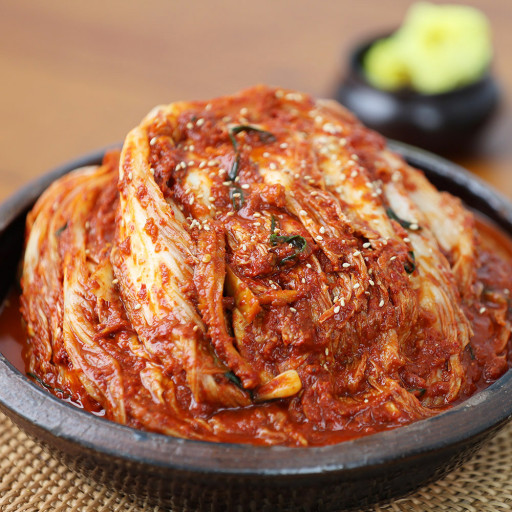

KIMCHI, Korean food

Description
Kimchi is a traditional Korean dish made with fermented vegetables. Its ingredients can vary, but napa cabbage and Korean radish are common bases. Kimchi also often includes green onions, ginger, and garlic.
Ingredients
- napa cabbage
- sea salt
- fish sauce
- green onions
- white onions
- garlic
- ginger
- gochugaru
Steps
- Prep and cut the cabbage.
- Rub with salt and seal in airtight bags, then leave at room temperature for six hours.
- Rinse with cold water, drain, and squeeze out the excess liquid.
- Place in a container with a tight fitting lid, then add the remaining ingredients.
- Seal and let sit in a cool, dry place for four days.